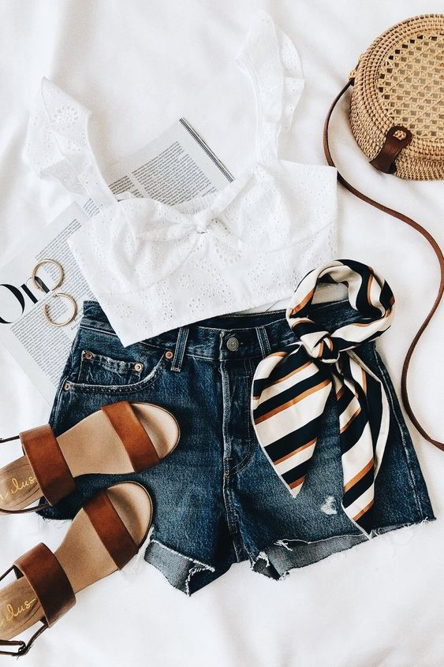
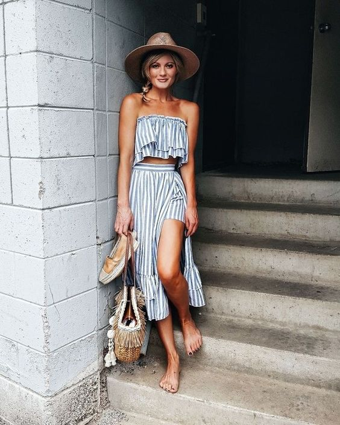
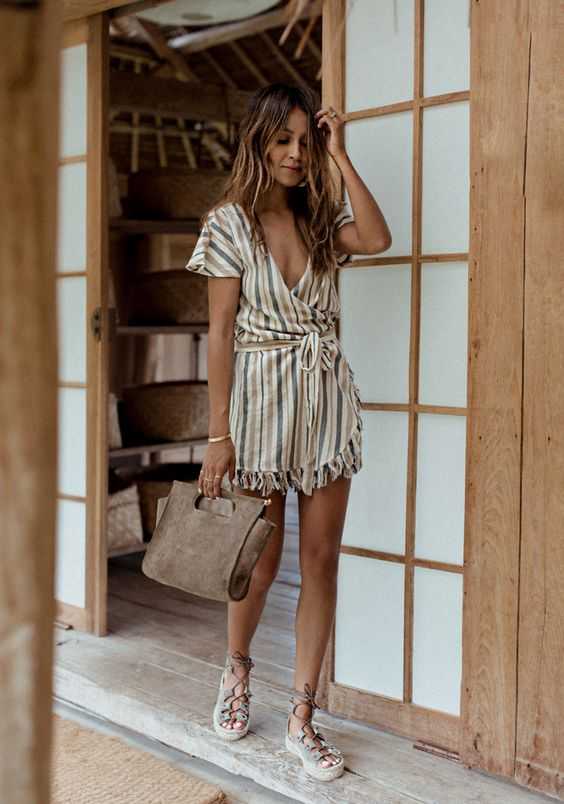
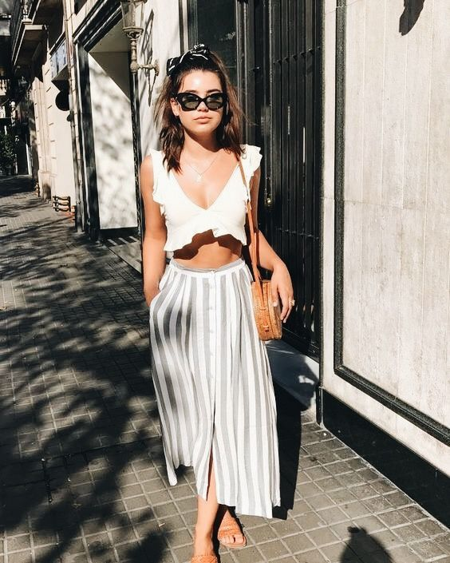
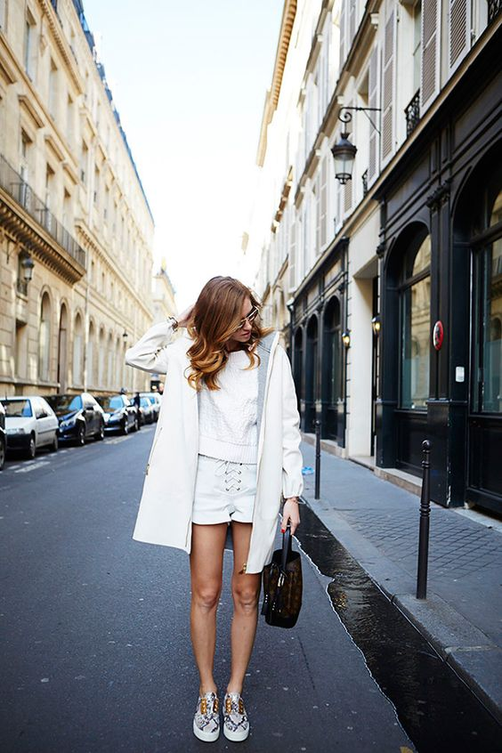
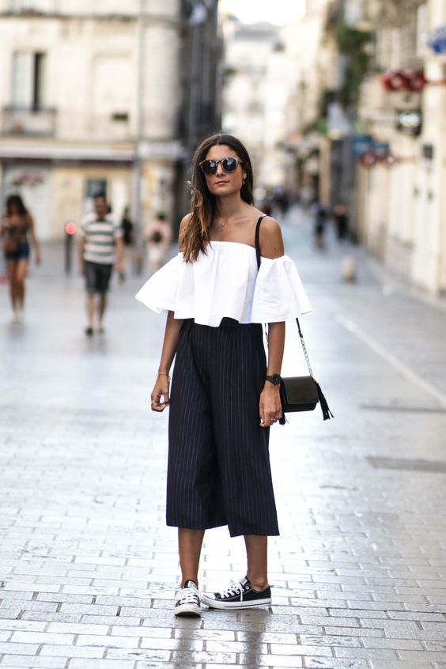
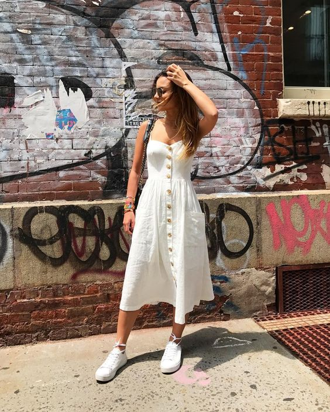
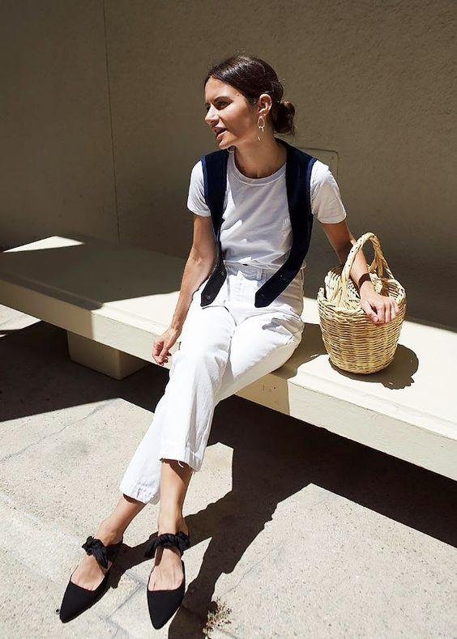
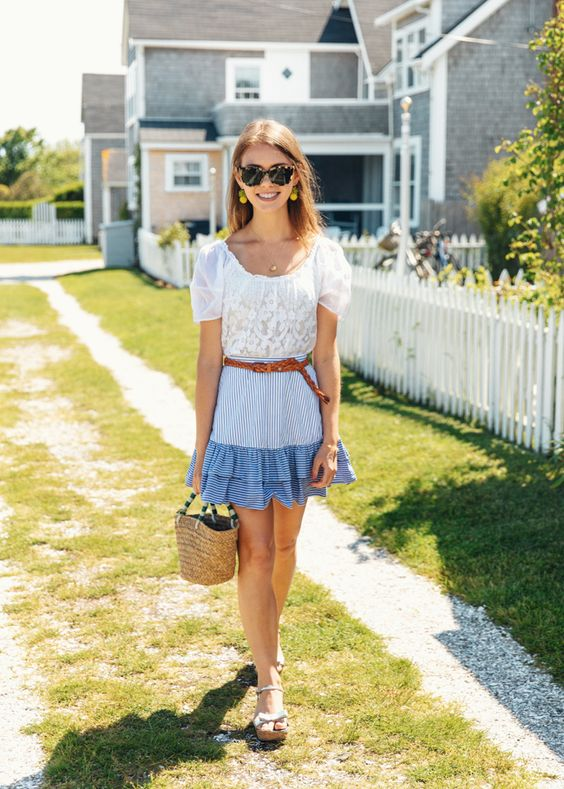
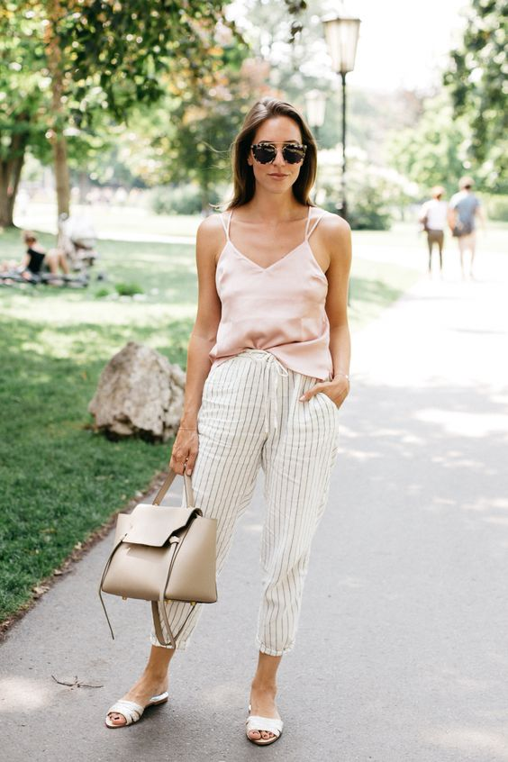

VACATION DAY OUTFIT IDEAS FOR THIS SUMMER

Summer is finally just around the corner, which means it’s officially time to swap your dark denim and close-toed shoes for jean shorts and lighter tops. Just because it’s almost summer doesn’t mean you’re going to have to swap out your go-to outfit formula for something completely foreign.
As of late, we have been seeing tons of pretty ruffled, floral, puffy, and ruched tops that will make any pair of jeans look like a million bucks.
- Beach Style
With a hero statement piece, all you’ll need is a straw hat, pair of chic sunnies and slides to complete the look.



- Strolling The City
Wear with a fun top, slip on your favorite pair of jeans, and top it all off with a sharp bag to master the look.


- Picnic to the Lake or BBQ Backyard
When you want to look cute, but not too overly dressed, for low-key settings, choose a casual dress with subtle details that make a big impact.


SUMMER OUTFIT IDEAS >>